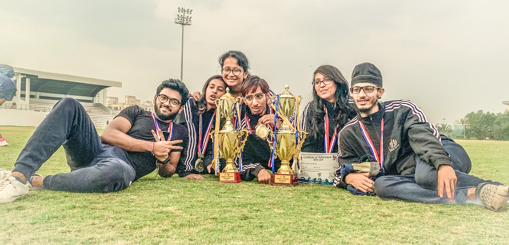

The Table Tennis Club of IISER Kolkata is run, managed and programmed entirely by IISER Kolkata students.
With this nascent initiative, we as a fraternity want to provide this platform to one and all.
Our goal is to make people know about our game - Table Tennis - and to unveil the students' hidden interests towards it, sharpen their skills,
and promote whiff-whaff in the institution and beyond.

This website includes useful information such as current events, tournament schedules, our awards and victories, and official rules.
It has been designed and built by
Satvik Saha and
Ananyapam De.
You can read our club's code of conduct
here.
This includes information about our body of members and office bearers, details of our tournaments,
coaching, and other rules and regulations.